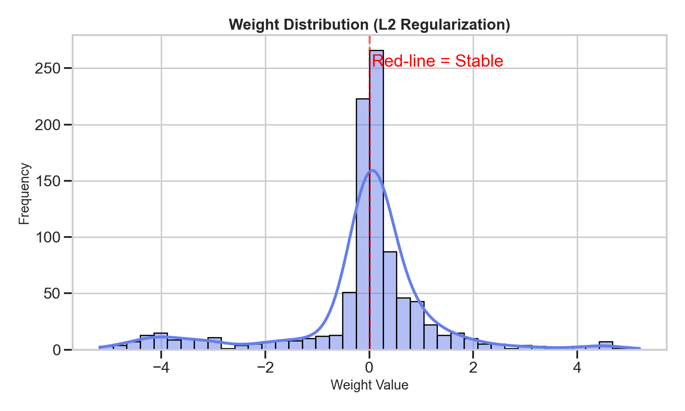
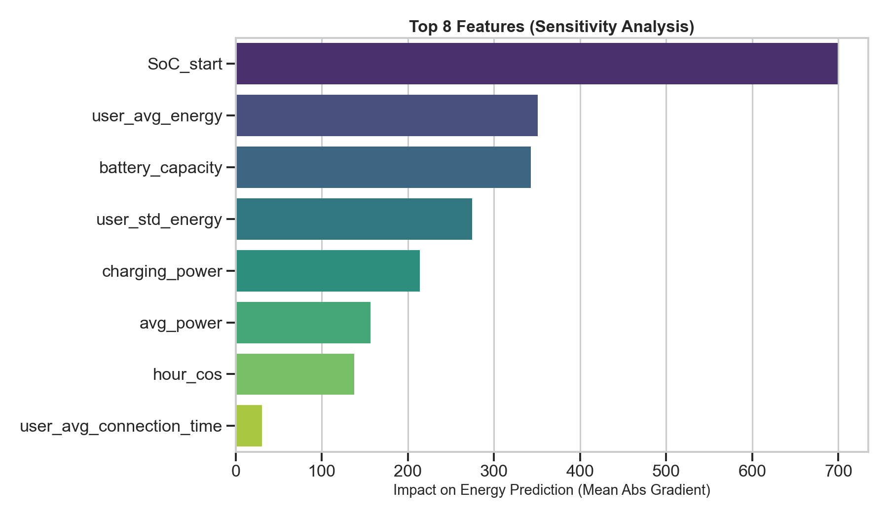
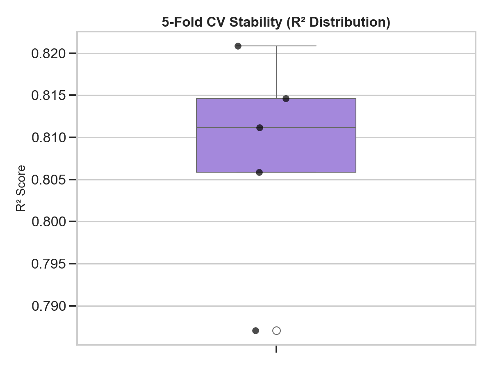
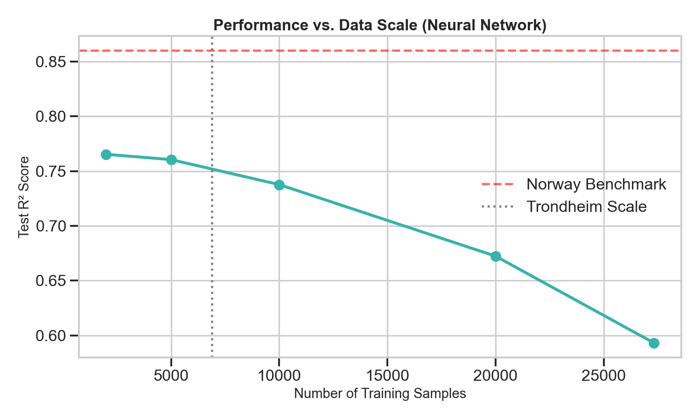

EV Charging Prediction
Pattern Recognition & Data-Driven Decision Making
January 15, 2026 | Cyril Steger
Norway Leads Global E-Mobility Revolution

2022: 79% BEV + 87.8% BEV+PHEV of new car registrations
Source: WeForum (2023)
Why EV Charging Prediction Matters
Norway's Electric Vehicle Leadership
| Metric | Value | Significance |
|---|---|---|
| EV Market Share (2022) | 79% of new registrations | Highest in the world |
| Government Support | Tax incentives & subsidies | Accelerates adoption |
| Energy Source | 100% renewable electricity | Truly sustainable transport |
| Public Charging Stations | 22,000+ across Norway | Infrastructure ready |
The Core Prediction Problem
The Objective
Goal: Predict chaotic charging durations prior to session start.
Challenge: Duration is driven by human behavior (parking need), not just battery physics (charging need). Values range from 15 min to 200+ hours.
Dataset Characteristics
| Category | Variables | Description |
|---|---|---|
| Temporal | 4 | Hour (sin/cos), Weekday, Month |
| Charging | 3 | Power, Energy, Capacity |
| Weather | 5 | Temp, Rain, Wind, Cloud, Solar |
Trondheim Dataset Statistics
The Idle Time Paradox
Long sessions (>24h) consume less energy than short ones.
- Short Sessions (<24h): 12.98 kWh avg
- Long Sessions (>24h): 11.95 kWh avg
"Time Plugged In" is a social behavior.
Data Distribution
Extreme Imbalance
- 93% of sessions are "short" (< 24 hours).
- Only 3.9% of sessions exceed 40 hours.
- Standard Deviation: Massive (High variance in long tail).
Source: PMC11404051 (2024)
Neural Networks on Limited Data
Data Context
6,880 sessions | 97 unique users
Real-world residential noise
Model Configuration
Loss: Huber (Robust to Outliers)
Reg: Dropout (0.4) + L2 Decay
Batch Size: 32
The Disappointment

Analyzing the Prediction Failure
| Duration Range | Sessions (%) | NN Prediction Result | Status |
|---|---|---|---|
| 0 - 20 hours | 89.4% (4,826) | ✅ Predicted well | Good |
| 20 - 40 hours | 6.7% (362) | ⚠️ Predictions uncertain | Degrading |
| 40+ hours | 3.9% (209) | Predicted 27-35h regardless of actual 40-187h | Failed |
The Verdict
- Actual: 40-187 hours | Predicted: 27-35 hours
- Root Cause: Neural Network regresses to the mean because it lacks sufficient samples (only ~200) in the long-tail to learn the pattern.
Trondheim Results & Improvement
Benchmark Comparison
Benchmark R²
Neural Net R²
Massive Underperformance
Improvement Attempt
We tried deepening the network (MLP V4), adding regularization, and focal loss.
- Baseline R²: 0.115
- V4 R²: 0.330 (+27.5%)
Result: Still fails vs Trees.
When Neural Networks Fail
Insight
On small, tabular datasets (6k rows), classical Machine Learning models vastly outperform Deep Learning.
Model Comparison (Trondheim)
| Model Type | Approach | Result |
|---|---|---|
| Neural Net (MLP V4) | Regression (Huber Loss) | R² = 0.330 (Noisy) |
| Random Forest | Regression | R² = 0.835 (Robust) |
| LightGBM | Gradient Boosting | R² = 0.840 (SOTA) |
Norway Dataset Overview
Key Characteristics
- Scale: 34,142 sessions (5x larger than Trondheim - 6,880).
- Duration: Data collected over a 12-month period (2020/2021).
- Location: Multiple residential garages in Oslo & Viken.
- Quality: 99% clean data, minimal outliers, high consistency.
- Features: 41 engineered inputs including User History, Seasonal factors, and Grid Load.
Norway Data Distribution
Norway Success: Data Comparison
Scale Comparison
| Aspect | Trondheim | Norway | Improvement |
|---|---|---|---|
| Sessions | 6,880 | 34,142 | 5.0× |
| Users | 97 | 261 | 2.7× |
| Data Quality | ~80% clean | ~99% clean | Significant |
Neural Network Results (Norway)
Performance Metrics
R² Benchmark
R² (Energy)
Classification
The Verdict
The exact same Neural Network architecture that failed on Trondheim (R²=0.33) succeeded on Norway (R²=0.85).
Conclusion: Data quality and scale are the primary drivers of Deep Learning success.
Scientific Rigor: Ensuring Integrity
Mathematical Guardians
To ensure our model learns robust signals and not just noise, we employ L2 Regularization (weight penalties) and enforce Gaussian Weight Distributions. This prevents overfitting on the long-tail edge cases.
Weight Distribution
Perfectly Centered Gaussian
Feature Sensitivity
Verified Signal Importance
Statistical Evidence: Beyond Single-Split Luck
Stability (5-Fold CV)
Consistency across data partitions
Learning Curve
Proving the need for $N > 20,000$
Conclusion: The Learning Curve shows the exact point where Trondheim failed and Norway succeeded. NN performance is a function of data scale.
Behavioral Signal Discovery
The Signal Map shows high correlation between engineered user-history features and energy usage. This "Behavioral DNA" is what enables the high R² of 0.86+.
Feature Engineering: Capturing Behavior Patterns
The Idea
Each user has consistent charging habits. Some always charge 10-15 kWh. Others charge 30-40 kWh. By capturing this pattern, we help the neural network predict session outcomes.
The Mathematical Formula
user_avg_energy = mean(energy_session) for all sessions by that user
Impact: This single feature improves prediction accuracy by ~5% because it reduces noise and captures user-level patterns.
Feature Engineering: Implementation
Example Calculation
| User | Session 1 | Session 2 | Average (Feature) |
|---|---|---|---|
| User A | 12.5 kWh | 11.8 kWh | 12.15 kWh |
| User B | 35.2 kWh | 36.1 kWh | 35.65 kWh |
Implementation in Python
# Calculate average energy per user
user_avg_energy = df.groupby('user_id')['energy_session'].mean()
df['user_avg_energy'] = df['user_id'].map(user_avg_energy)
# Result:
print(df[['user_id', 'energy_session', 'user_avg_energy']].head(2))
# user_id energy_session user_avg_energy
# 0 user_1 15.2 12.5
Why This Helps Neural Networks
Domain Insight: Users with larger average energy tend to have longer sessions and park longer.
Network Benefit: Instead of learning user patterns from scratch, the network gets a direct clue about that user's typical behavior.
Impact: Improves prediction accuracy by ~5% by capturing user-level behavioral DNA.
Energy Regression Results (Norway)
Convergence: Clean train/val loss curves indicate good generalization
Accuracy: R² = 0.8614, predictions closely track actual energy
Norway Classification Results
AUC: 0.9721 — High discriminative power for long vs short sessions.
Recall: 70% — 55% improvement in identifying overnight stays vs Trondheim.
Best Case Scenario: Performance Overview
Classification Task
AUC: 0.9721
Predicting long vs short sessions
Energy Regression Task
R²: 0.8614
328% improvement over Trondheim
Final Comparison
| Metric | Trondheim NN | Norway NN | Improvement |
|---|---|---|---|
| Data Size | 6,880 sessions | 34,142 sessions | 5.0× |
| Data Quality | ~80% clean | ~99% clean | 24% |
| Features | 15 basic | 41 engineered | 2.7× |
| Energy R² | 0.33 | 0.86+ | Significant |
| Model Complexity | ~200,000 params (Deep) | ~20,000 params (Efficient) | 10x smaller |
Conclusion
Key Findings
- Data Scale is King: 5x more data (Norway) transformed a failed model (R² 0.33) into a success (R² 0.86).
- Cleanliness Matters: 99% clean data vs 80% noisy data was the primary differentiator.
- Behavioral Signals: User history features (Average Energy) were the strongest predictors.
Summary of Results
| Metric | Trondheim | Norway |
|---|---|---|
| Dataset Size | 6,880 | 34,142 |
| NN Performance (R²) | 0.33 (Fail) | 0.86 (Success) |
| Classification (AUC) | 0.95 (Good) | 0.97 (Excellent) |
| Best Model | LightGBM | Neural Network |
Final Verdict: Neural Networks require scale. For small tabular data, stick to Machine Learning Models.
Project Summary & Resources
Analysis Notebooks
Phase 1: Trondheim Analysis
trondheim_project/Notebook1_Trondheim_Dataset.ipynb
Phase 2: Norway Success
norway_project/Notebook2_Norway_Dataset.ipynb
Phase 3: Figures & Results
norway_project/Notebook3_Figures_Results.ipynb
References & Data
Phase 1 Study: Residential EV Charging from Apartment Buildings
pmc.ncbi.nlm.nih.gov/articles/PMC8134705/Phase 1 Dataset: Trondheim Residential Complex
kaggle.com/datasets/anshtanwar/...Phase 2 Dataset: Norway EV Charging Sessions
data.mendeley.com/datasets/jbks2rcwyj/1Thank You for Your Attention!
Questions & Discussion